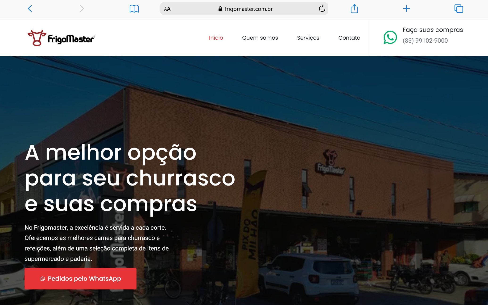
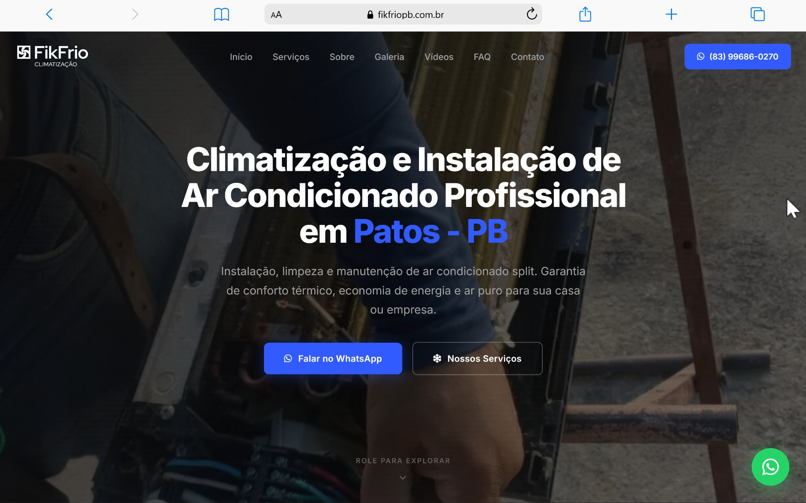

Criação de sites · Guia de investimento
Quanto custa um site em João Pessoa? Saiba como investir.
Criar um site começa por entender o que sua empresa precisa apresentar e como o cliente vai entrar em contato. Veja o que influencia o preço, quais custos considerar e como comparar propostas.
Um cliente recebe a indicação da sua empresa, pesquisa o nome no Google e procura informações antes de chamar no WhatsApp. Nesse momento, encontrar uma página clara, com serviços, fotos e formas de contato pode ajudar na decisão.
Para quem está organizando essa presença digital, uma das primeiras dúvidas é quanto custa um site em João Pessoa. A resposta depende do tamanho do projeto, do conteúdo e das funcionalidades que precisam ser desenvolvidas.
Quanto custa criar um site em João Pessoa?

Para começar o planejamento, considere estas faixas indicativas:
| Tipo de projeto | Investimento de referência |
|---|---|
| Site de página única ou landing page com escopo enxuto | R$ 700 a R$ 2.500 |
| Site institucional com várias páginas | R$ 1.500 a R$ 7.000 |
| Site com conteúdo, personalização ou integrações mais extensas | Pode ultrapassar R$ 5.000 |
| Loja virtual ou sistema com regras específicas | Orçamento conforme o projeto |
Esses valores são referências editoriais de planejamento, baseadas em ofertas públicas consultadas em outubro de 2026. Não constituem uma média estatística do mercado nem uma tabela de preços da Raio Local. Existem propostas abaixo e acima dessas faixas.
As faixas se sobrepõem porque dois sites com a mesma quantidade de páginas podem exigir trabalhos diferentes. Uma página com texto pronto e contato por WhatsApp tem um escopo diferente de outra que exige redação, agendamento e integração com ferramentas de atendimento.
Antes de comparar o valor, confira o que será entregue. O orçamento precisa deixar claros os custos de criação, publicação e continuidade.
O que influencia o preço de um site?
Quantidade de páginas e organização dos serviços
Um site de página única reúne as informações principais em uma mesma tela. Um institucional pode ter páginas próprias para cada serviço, além de apresentação da empresa, projetos e contato.
Para uma assistência técnica em João Pessoa, por exemplo, pode fazer sentido separar conserto de videogames, manutenção de computadores e reparo de eletrônicos. Cada página precisa de conteúdo útil e específico, o que aumenta o trabalho de produção.
Produção de textos e imagens

Quem vai escrever os textos? As fotos já estão disponíveis? Será necessário organizar depoimentos, selecionar imagens ou revisar a apresentação dos serviços?
Quando essas tarefas fazem parte da contratação, devem aparecer na proposta. O conteúdo ajuda o visitante a entender a oferta e precisa receber atenção junto com o layout.
Design e experiência no celular
O trabalho de design envolve organizar informações, facilitar a leitura e tornar o contato simples. Isso inclui tamanho dos textos, contraste, navegação e funcionamento em diferentes telas.
Uma base de layout existente pode reduzir o custo inicial. Um projeto visual desenvolvido sob medida costuma exigir mais etapas. A escolha deve considerar o orçamento e as necessidades da empresa.
Funcionalidades e integrações
Botão de WhatsApp, formulário, catálogo, agendamento, área de clientes e pagamento online representam níveis diferentes de complexidade.
Também vale distinguir um link para uma ferramenta externa de uma integração desenvolvida dentro do site. Pergunte como cada recurso vai funcionar e se haverá assinatura de outro serviço.
Preparação para o Google
O orçamento deve explicar quais cuidados de SEO estão incluídos: organização de títulos, endereços das páginas, descrições, links internos e otimização de imagens, por exemplo.
A preparação inicial cria condições para o trabalho de busca orgânica. A evolução depende também do conteúdo, da concorrência e das ações realizadas ao longo do tempo.
Criar um site não garante a primeira posição no Google. Desconfie de propostas que prometem uma colocação específica como resultado automático da publicação.
Qual tipo de site faz sentido para sua empresa?

Uma página única pode atender um negócio que precisa apresentar poucos serviços, mostrar trabalhos e receber pedidos pelo WhatsApp. É uma opção para começar com uma estrutura concentrada.
Uma landing page costuma ser planejada para uma oferta ou campanha específica. Pode divulgar um serviço de instalação de ar-condicionado, por exemplo, com informações e contato voltados para esse objetivo.
Um site institucional com várias páginas oferece mais espaço para empresas que precisam detalhar serviços, apresentar sua história e publicar projetos. Também permite trabalhar assuntos diferentes em páginas próprias.
Uma loja virtual envolve catálogo, pedidos, pagamento e outras rotinas de venda. Se o objetivo é apenas apresentar produtos e negociar pelo WhatsApp, um catálogo sem checkout pode atender à primeira etapa.
O formato ideal acompanha a maneira como sua empresa vende. Defina primeiro o que o visitante precisa saber e qual ação deve conseguir realizar.
Quais custos existem depois da publicação?
Além da criação, considere as despesas para manter o projeto funcionando:
- Domínio: o endereço do site, normalmente renovado por períodos anuais.
- Hospedagem ou plataforma: o serviço que mantém o site disponível.
- Manutenção: atualizações, backups, correções e suporte, conforme o contrato.
- Ferramentas adicionais: recursos pagos de agendamento, formulários, e-mail ou outras integrações.
- Conteúdo e divulgação: produção de novas páginas, artigos, SEO contínuo e anúncios, quando contratados.
Algumas propostas agrupam esses itens em uma mensalidade. Outras cobram cada serviço separadamente. Confira o preço de renovação, os limites de suporte e o que acontece ao encerrar o contrato.
Peça uma estimativa do custo total para os primeiros 12 meses. Isso permite comparar propostas que usam modelos de cobrança diferentes.
Como comparar orçamentos de criação de sites?
Envie o mesmo resumo do projeto aos fornecedores. Informe os serviços da empresa, o objetivo do site, as páginas necessárias e os materiais que já estão disponíveis.
Depois, confira:
- Entregas: quantidade de páginas, textos, imagens e funcionalidades.
- Revisões: quantas rodadas de ajustes estão previstas e como serão aprovadas.
- Prazo: quando começa a contar e quais materiais precisam ser enviados.
- Publicação: quem configura domínio, hospedagem e coloca o site no ar.
- Acessos e propriedade: quem controla as contas e o que será entregue ao final.
- Continuidade: suporte, renovação, manutenção e condições para mudar de fornecedor.
Uma proposta de menor valor pode atender bem a um escopo simples. Uma proposta mais completa deve explicar quais entregas justificam o investimento adicional.
Como o site se conecta ao Google Maps?
O Perfil da Empresa no Google apresenta informações rápidas, como telefone, horário e localização ou área de atendimento. O site permite aprofundar a apresentação dos serviços e mostrar exemplos do trabalho.
Para um negócio em João Pessoa, essas informações precisam ser coerentes. Quem sai do perfil e chega ao site deve reconhecer a empresa e encontrar um caminho fácil para continuar o atendimento.
Uma empresa de climatização, por exemplo, pode usar o site para explicar instalação e manutenção, informar as regiões atendidas e orientar o pedido de orçamento.
Leia também: SEO Local: por onde começar para aparecer no Google Maps?
Como investir em um site sem complicar?
Comece pelo objetivo comercial. Sua prioridade é receber orçamentos, apresentar serviços ou vender produtos? Em seguida, reúna as dúvidas mais frequentes dos clientes e os materiais que ajudam a respondê-las.
Com isso, fica mais fácil definir uma primeira versão que caiba no orçamento. Novas páginas e recursos podem entrar depois, desde que essa possibilidade seja considerada no planejamento.
Após a publicação, acompanhe os contatos recebidos e pergunte como as pessoas encontraram a empresa. Observe também se elas chegam ao atendimento entendendo o serviço. Esses sinais ajudam a avaliar o papel do site na venda.
Liste seus serviços principais, separe fotos do trabalho e defina a ação que o visitante deve realizar. Esse material já ajuda a solicitar um orçamento mais preciso.
Quer saber quanto investir no site da sua empresa?
A Raio Local trabalha com criação de sites profissionais e SEO Local para empresas em João Pessoa e outras regiões do Brasil.
Conte o que sua empresa oferece, quem deseja atender e o que espera do site. A partir dessas informações, podemos conversar sobre uma estrutura adequada e os próximos passos.
Conversar com a Raio Local sobre meu site